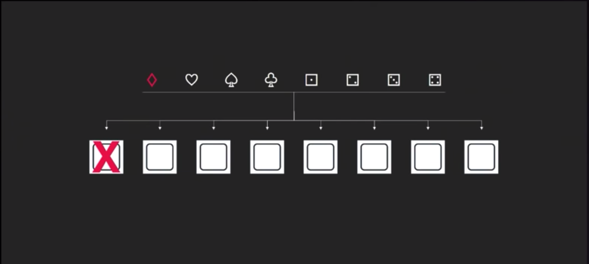
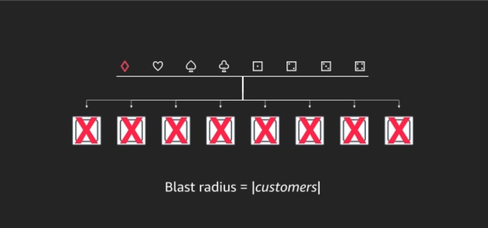
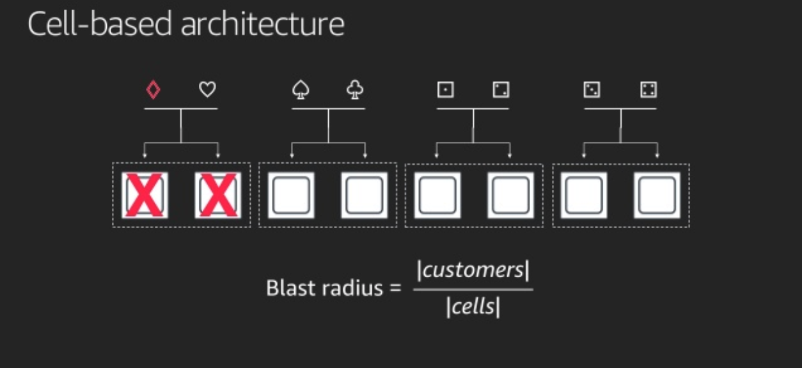
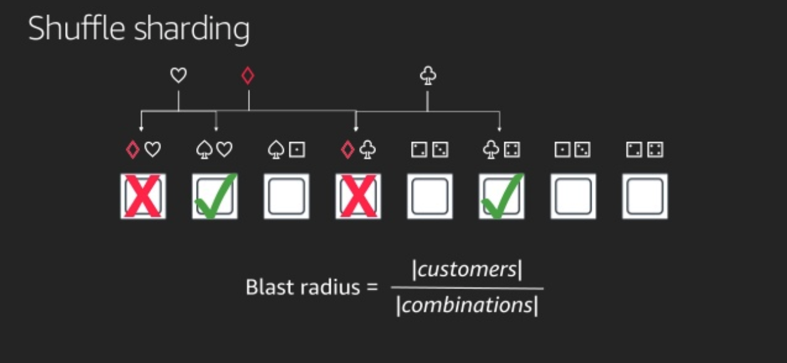

Preface
Colm MacCárthaigh 是 AWS 的 Senior Principal Engineer，如果常在追他的 Twitter 帳號會看到很多有趣的 AWS 內部的 architecture 設計，像是最近有人在 og-aws.slack.com 的討論區問到為什麼 AWS 的 status alert 不一定會影響到該 region 的全部 customer 呢? 我隨機找了一個 alert 的內容:
Beginning at 11:54 AM PST some Amazon Aurora clusters experienced increased database create times and cluster unavailability in the AP-SOUTHEAST-2 Region. Elevated create times were resolved at 2:27 PM PST, at which point some existing clusters continued to experience availability issues. As of 5:35 PM PST both issues have been resolved and the service is operating normally. In total, the event impacted a little less than
3%of the Aurora databases in the region.
可以看得出來，這個問題只影響了 3% 的 Aurora database，然後 AWS 這邊會建議每個用戶使用 Personal Health Dashboard 去看是否真的有受影響，這邊就讓很多人好奇 AWS 的底層，到底是怎麼去做 isolation 且提供 multi-tenancy 的服務，不讓一些故障的 servers 影響到全部人，而我這篇文章就是從 Colm MacCárthaigh 的 tweet 展開，有興趣的人也可以直接去看他的 tweet。
It's no good sharing everything if a single "noisy neighbor" can cause everyone to have a bad experience. We want the opposite! At AWS we are super into compartmentalization and isolation, and mature remediation procedures. Shuffle Sharding is one of our best techniques. O.k. ..
— Colm MacCárthaigh (@colmmacc) August 28, 2018
Shuffle Sharding
其實 Colm MacCarthaigh 早在 2014 年的時候，就在 AWS architecture blog 上面揭露過 Shuffle Sharding 這個概念，而下面的例子我是從 reinvent 2018 的 slides 裡面擷取出來的。
Basic architecture
假設你有一組 service，裡面共有八個 nodes，這些 nodes 都接在一組 LB 後面，此時有八組不同的 customer 上門， 如果 Diamond 這個 request 進到系統後，因為某些原因，也許是剛好碰到系統的某個 Bug 或是某種 workload 不小心把一組 node 打垮了，又好巧不巧的，它因為沒有接受到想要的回應，不斷的 retry 也把其他的 nodes 也打垮了，這時候我們要討論的 Term 叫做 Blast Radius，也就是針對 customers 的爆炸範圍，以我們這個例子來看


也就是全部的 customer 都被炸翻了！ 這也是最糟糕的狀況，AWS 在建構它們的服務時極力的避免這種情況。
Cell-based architecture
為了避免 Diamond 直接把全部 nodes 都弄爛，其實簡單一點的方法可以直接把 nodes 分組，切成不同的 cell，兩兩成群，而針對不同的 cells，我們也會分配兩個 customer，這樣 Diamond 頂多把其中兩台給弄掛掉，而以這個例子來看頂多愛心這個倒霉的 customer 一起中招，這樣一來針對 Blast Radis 就可以得到 4x 的改進，從 100% 下降到 25%，也就是只有 25% 的 customer 受到影響。

這個方法在 AWS 內部稱作 cellularization，其實套用在很多不同的服務上面，像是 isolated regions 還有 availability zones。
Shuffle Sharding
有了以上概念後，可以再回到 Shuffle Sharding，其實非常的簡單，我們不一定要讓 customer 在固定的 cell 裡面，其實目標只是要分配 customer 的 requests 到不同的兩個 node 上面，而通過 random 的分配不同的 nodes 上面，透過下面這張圖我們可以發現，這個方法的威力真的很大，Diamond 雖然也是讓兩個 nodes 直接掛掉，但是在上面的 customer 其實分別是愛心和梅花，而他們的 request 還有其他的 node 可以服務，所以愛心和梅花，還是可以通過 retry 去達到 fault tolerance，所以整體的 Blast Radius 降低到只影響一個 customer。

這個圖是比較簡化的，其實 8個 的 nodes 去隨機選出 2個 node 的 combination 是 28 組，也就是有 28 種分配方式，而 Blast Radius 的算法是像下面這樣去考慮某一組 combination 壞掉的機率:
slides 中也提供了一個 table 告訴我們，採取了 Suffle sharding 會讓 % customer impacted 降到 3% ! 這也是為什麼 AWS 的 service 有問題時，會推薦你看 personal health dashboard ，因為爆炸範圍真的沒那麼廣。
| Overlap | % customer impacted |
|---|---|
| 0 | 53.6% |
| 1 | 42.8% |
| 2 | 3.6% |
講到這邊，其實已經覺得很厲害了，不過 AWS 因為客戶非常的多，所以還是無法容忍這麼高的影響率，所以 AWS 設計了 100 個 Nodes，shard size 為 5 的架構，這邊再來算個數學
| Overlap | % customer impacted |
|---|---|
| 0 | 77% |
| 1 | 21% |
| 2 | 1.8% |
| 3 | 0.06% |
| 4 | 0.0006% |
| 5 | 0.0000013% |
整體的數字下降到 0.0000013%!
Conclusion
在使用 Shuffle Sharding 中，Client 端的 retry 也是很重要的，然後可以透過數學知道 Node & Shard 的數量產生的機率，再去設計你的架構，從 Shuffle Sharding 再來看 AWS 怎麼處理自身內部的 deployment，就變得異常合理和安全，AWS 的部署方式是先從某個 region 中的一個 AZ 來部署，如果 monitoring 的結果都沒問題，在慢慢 rollout 到不同 AZ 接著到不同的 region，這樣一但有問題，受到影響的 customer 數量也是極少，透過瞭解 AWS 底層也可以讓我們了解，為什麼 Multi-AZ 的部署那麼重要，因為透過 AWS 底層的這種技術，再加上 application 有做到良好的 retry，其實是可以提昇整體 service 的 reliability 的。
Reference
- AWS re:Invent 2018: How AWS Minimizes the Blast Radius of Failures (ARC338)
- https://www.slideshare.net/AmazonWebServices/how-aws-minimizes-the-blast-radius-of-failures-arc338-aws-reinvent-2018
- https://aws.amazon.com/blogs/architecture/shuffle-sharding-massive-and-magical-fault-isolation/